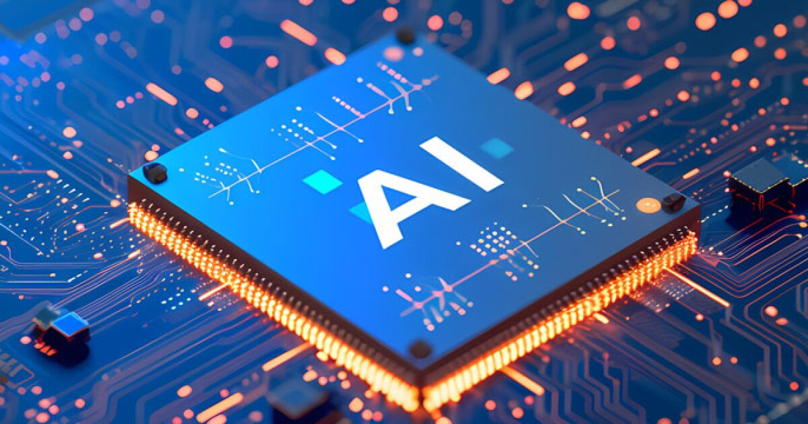

Artificial Intelligence (AI) is the simulation of human intelligence processes by machines, especially computer systems. These processes include learning (the acquisition of information and rules for using the information), reasoning (using rules to reach approximate or definite conclusions), and self-correction. Specific applications of AI include expert systems, speech recognition, and machine vision.
| Pros of AI | Cons of AI |
|---|---|
| Efficiency and Automation: AI can perform tasks faster and more accurately than humans, leading to increased productivity and efficiency in various industries. | Job Displacement: The automation of tasks through AI can lead to job losses in certain sectors, particularly for roles that involve repetitive or routine tasks. |
| Data Analysis and Insights: AI can analyze vast amounts of data quickly, uncovering patterns and insights that may not be apparent to human analysts. |